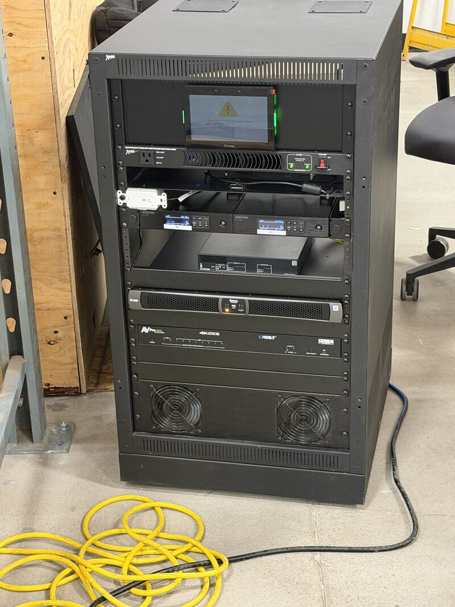
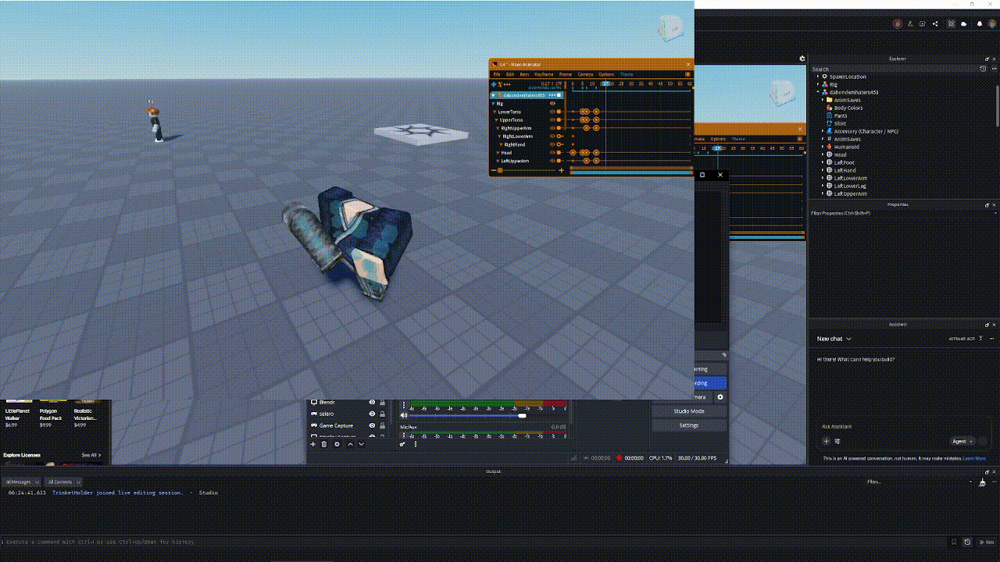

I honestly dont really know how to start this, I couldnt seem to find a topic that the first journal entry is suppost to talk about so i am just going to talk about my inital feelings and skills at the current moment and what i am trying to do now with this information. i dont think that i have alot of knoledge in any area of computer stuff but i feel that i can tinker in many aspects of cyber things like website development, game development, machine learning, sound manipulation. i feel that i have a good general knoledge if that makes sense? but i think my goal for this class or during the time of this class is to hone in on skills and to have a zone of comfortablilty in a certain domain of computers. right now i am working on games on and off, i dont think its at the consistency to give steady skill increase but it is enough to be learning more. hopefully that will change. i dont know what to expect about this course, but i am sure it will be helpful to whatever i wish to get out of it. i dont know how long these are supposed to be so i am just going to leave it here. maybe next joural entry i will have more of an idea
Journal Entry 2
Its good to start coding in python. I was always kind of intrested in tinkering in it but i never did. It reminds me alot of GD script for godot. i like how simple the syntax is and i think that i will be able to adapt quickly. i dont really know what i wish to do with python but maybe i can get a rasberry pi and start working with that if that is something that is viable. Exersize one was quite easy but i believe thats how it should be. I hope i am writing this journal correctly so if not let me know. iif this journal is suppost to have all coding stuff thats being done i just finished a game. or atleast the framework of it, the game is done but many details can be added. this is done in GD script so its good pracice for this class. I dont have much else to say, i think that ideas will come when i am faced with coding challenges
Journal Entry 3
I enjoyed the API tinkering, i tried to get another API key but i cant seem to have it activated, the Exersize this week was easy but i had alittle trouble with the last problem. i want to tinker more with the API keys but i am alittle lost with how to understand it so it might have to wait until i have the knoledge to. i do wonder how i can connect this to a website of some kind and desplay the API data in a certain way that makes it understandable. i am sure i can, definetly something to work on in the future. also been looking at NAV servers. as in the home media versions.

this is what one would look like, although definetly a very expensive one. basically it can be whatever you really want it to, want to host games, you can. want to download songs and make your own spotify for completely free, you can. basically its your own internet, not the best way of describing it but you have full control of this domain. really the use that i was thinking for it is if i did ever make a game and the multiplayer was rather large or atleast large enough that i would need a real server i would do it on this, also it can be used as a gigantic file sharing device that could transfer terrabites of data from one computer to another without having to pay or packatize(probably not a word but it should be), all your files so you can do small pushes to the other computer. with this device i could make huge blender files and any time i wish i could just connect to the server on any computer and download them. no need to push each time or watch the storage size, its just possible. or so i think. I will make this entry alittle longer because of the break inbetween, i also dont know how good i should make them to get the full points but i will add some more cool stuff. one cool thing i been doing over the break is going into the roblox studio game engine. It seems to get alot of hate but i really do like the system, its alittle more weird then what i am used to because the inspector is filled will all these things that you never added, like replicated storage, starter folders workplace etc. but once you understand there places its quite nice. atleast for now, at the moment i am working on combat, which is making me create module scrips and local scrips and normal scripts. and connecting them all and firing other scripts aswell as instantiating temperary folders that act as a boolean... its alot. here is a cool little animation for a flying knee that i made! i made a flying kick too that is way more awesome but still tweeking it. and over the break i also did finish a platformer which was nice. i really am taking this as a journal to just write about computer stuff. i think that is the goal though so i will continue if not told otherwise.
Journal Entry 4
With deadlines left and right my curiosity has been stunted sadly. I still have many questions and ideas that are worth exploring about API and python but sadly havent had the time to dive in. I would like to say that i have something specific that i am working on but at the moment i do not. i shall touch up on the ideas prior to this one. For the game if that even counts, it is getting far more complex, i thought that the combat system wouldnt need much more but i was deadly mistaken. maybe its because i am learning it through a series of tutorials that its presented to be more difficult. but this is unlike other systems that i am used to, the problem is when work is stacked apon me and i dont work on things rust starts to develop, like every person that doesnt practice a skill. I think that i am still intrested in working on the system but i do want to move on to making more of the actual game not just the combat. on another train of thought i think i am definetly jumping the gun with something like a NAV system, i havent even entered the realms of rasberry pi's yet and i am talking about a home nav system. anyways i think that for this upcoming week after i clear the way for one of my midterms i will try and steer back to have my mind more connected back to what i want it to which is this. hopefully i can balance my workload better in the future to avoid this issue but only time will tell
